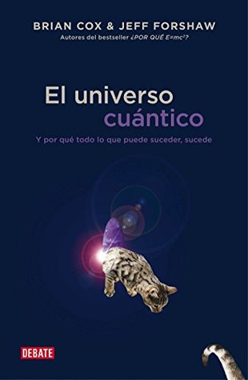

El universo cuántico: Y por qué todo lo que puede suceder, sucede (Spanish Edition)
Reseña por Jorge I. Zuluaga

Ver reseña en GoodReads (necesita cuenta)
Creo que ninguna, hasta ahora, ha conseguido su objetivo final: hacer creer a un número significativo de personas que no son profesionales de la física que la teoría cuántica puede entenderse (aclaro que los que somos profesionales tampoco la entendemos, solo la usamos).
Este libro no es la excepción dentro de la innumerable cantidad de textos que buscan ese "santo grial" de la divulgación de la teoría cuántica. No, después de leer "El universo cuántico" tampoco entenderás la teoría cuántica.
Pero ¿es esa una razón para no leer el libro? ¡de ninguna manera!
Y es que la teoría cuántica no puede "entenderse" en el sentido tradicional de la palabra. Cuando decimos que "entendí una teoría o una visión del mundo" lo que queremos decir es que creamos un modelo de lo que nos explicaron usando objetos y fenómenos con los que hemos tenido contacto antes. Para entender el calor y su relación con las moléculas no hace falta ver una molécula, basta pensar en las balotas en una tómbola o en una piscina de pelotas.
Tampoco puede darse sentido a lo cuántico usando la lógica del mundo clásico: causa->efecto->causa->efecto.
No son por tanto los libros los que fracasan, son las expectativas del lector.
¿Cómo entonces "acercarse" a lo cuántico sin entenderlo? Mi recomendación como profesional de la física es hacerlo, justamente, leyendo la mayor diversidad posible de aproximaciones a los "objetos", los fenómenos, la lógico de lo cuántico.
Allí es precisamente donde este libro tiene un valor, para mí, con pocos precedentes en la literatura divulgativa de lo cuántico.
Muchos libros sobre el tema son una repetición incansable de los mismos temas (lo que es realmente muy bueno para acercarse a lo cuántico: repetir, repetir, repetir). Pero este hace una aproximación novedosa.
En lugar de usar la clásica explicación de los fenómenos cuánticos basada en la función de onda, que es descrita por muchos textos casi como una onda real, el texto usa una aproximación basada en el formalismo del propagador que podría describirse como la idea de que una entidad cuántica (un electrón por ejemplo) se divide (imaginariamente) en una infinidad de partículas que recorren el mundo por todos los caminos posibles. En cada lugar del espacio y el tiempo estas versiones imaginarias del objeto original tienen una propiedad cuántica que se asemeja a un "reloj" que marca una hora (fase) y tiene un tamaño (magnitud). La interacción de estas partículas imaginarias con observadores y otras partículas son las que determinan finalmente el desenlace de los fenómenos asociados al sistema original.
Esta idea termina extendiéndose muy bien cuando se trata de explicar la teoría cuántica de campos, uno de los más temas más difíciles de divulgar. La manera como este libro trata el tema (especialmente en lo que respecta a la electrodinámica cuántica) es muy novedosa y a mi, que supuestamente soy físico, terminó aclarándome algunos conceptos que no entendía muy bien.
Solo hay un problema serio con el libro: es incomprensible para un lector que se acerca por primera vez a la teoría cuántica.
Este es un libro para leer después de saber algo de teoría cuántica o de haber leído muchas aproximaciones diferentes a la teoría o repetido varias veces las mismas aproximaciones a las que nos tienen acostumbrados la mayoría de los textos divulgativos en el tema.
Este es también un buen libro para aquellos profesionales que queremos divulgar mejor la teoría cuántica y la física de la materia en general. La forma como describe y explica la conducción o no conducción de electrones en los sólidos es muy interesante y no muy común en textos divulgativos a este nivel. ¡Vale la pena leerlo!
En síntesis: 1) los que no saben mucho de teoría cuántica deberían alejarse de este libro (pero regresar a él después de leer otros más sencillos), 2) los que ya saben de teoría cuántica y no son profesionales, disfruten esta nueva aproximación (pero háganse a la idea que todavía no entenderán la teoría), 3) los que son profesionales y quieren o necesitan divulgar la teoría cuántica lean especialmente los capítulos dedicados a las moléculas, los sólidos y las interacciones fundamentales ¡son muy originales!
Si al fin descubriste que no puedes entender la teoría cuántica, al menos acostúmbrate a ello.